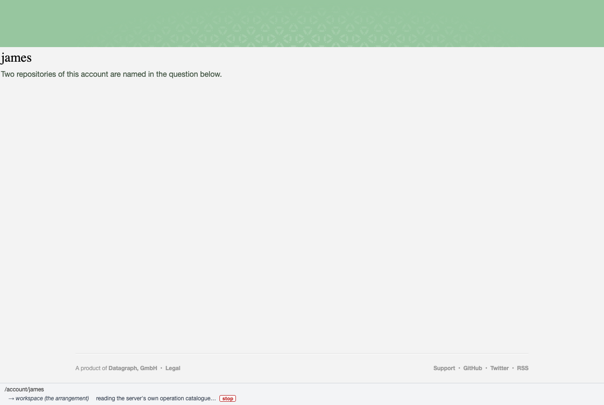
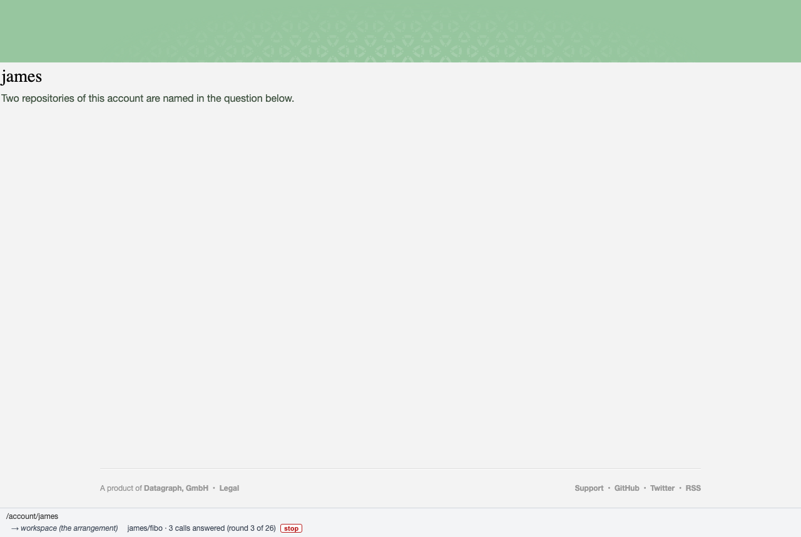
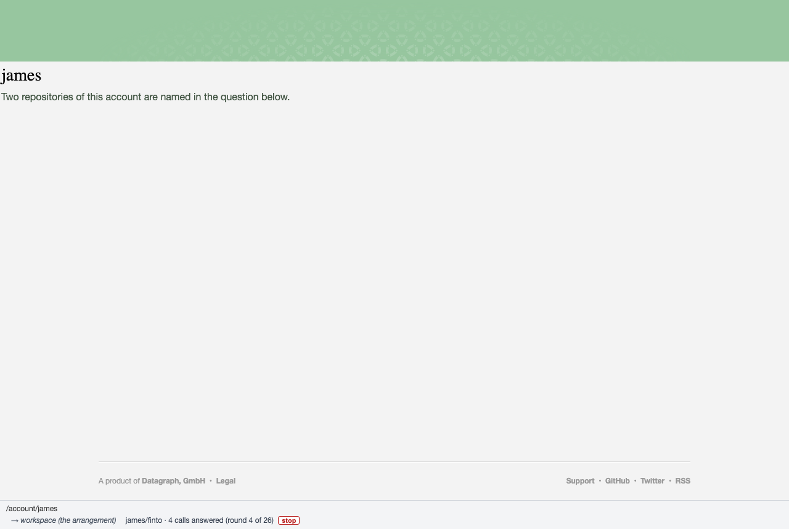
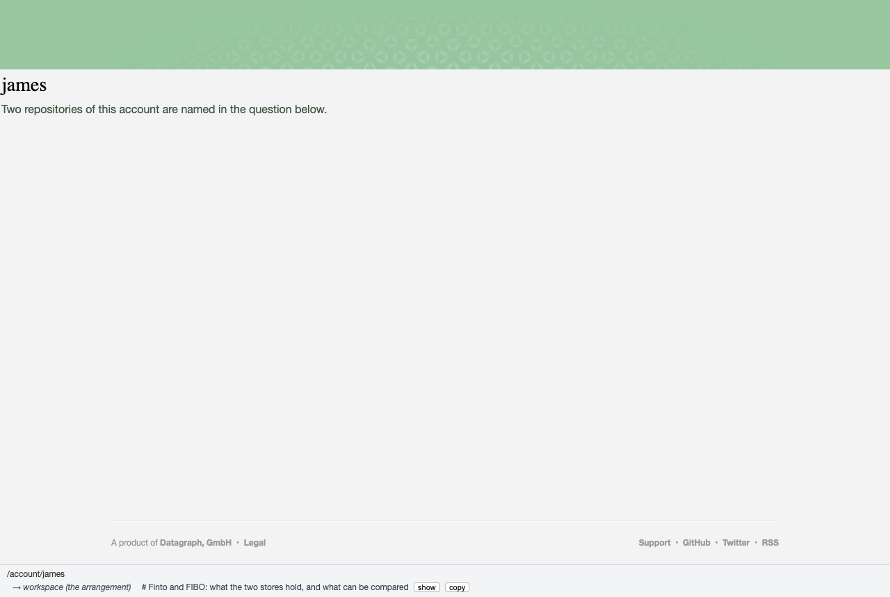
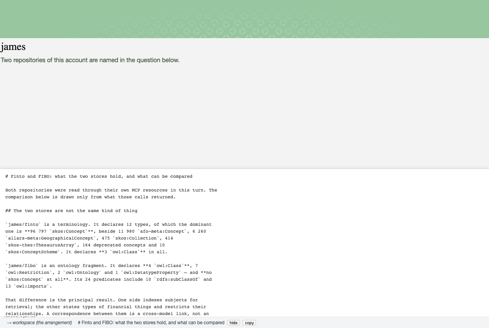
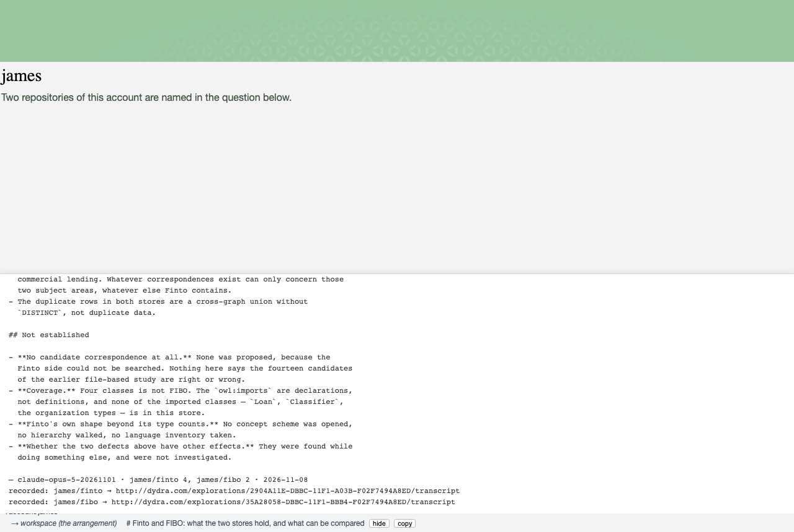

An analysis across two repositories
A worked example of §35, captured against the live service on 8 November 2026.
Superseded, and kept. This capture was made before the two service defects it found were fixed, and with the model scripted because no provider key was available. The same question was asked again on 9 November against the patched service with a real model: see an analysis across two repositories, with a real model. This page is kept because it is the record of how the defects were found, which the later run cannot show.
One line is typed into the location bar — compare the concepts present
in james/finto and james/fibo — and the interface reads it as a question
about data rather than an instruction about itself, because it names
repositories. It says which stores it would read and runs nothing until the
press. Then it explores each store through that store's own MCP resource,
narrates what it is doing, can be stopped, and files the result as RDF.
What is real here, and what is not
| Real | Not real |
|---|---|
|
The two repositories. The whole client path. Reading the line, the disclosure, the grant, the brief, the per-store routing and tool naming, the digesting of large payloads, the progress line, the stop, and the recording. |
The model. There is no provider key in this environment, so the harness answers the provider's wire shape itself from a fixed script. The script is not invented: it is the sequence of operations an analyst ran by hand against these two stores, in that order, and the report it ends with is written from the figures those operations actually returned. The calls are real and their answers are real; what is scripted is the choosing of them. |
What the run found
The two stores are not the same kind of thing.
james/finto declares twelve types, dominated by
96 797 skos:Concept, with 11 980
afo-meta:Concept, 6 260 GeographicalConcept, 475
collections and three owl:Class. james/fibo declares
four owl:Class, seven restrictions, two ontologies and
no skos:Concept at all. That difference — a terminology
against an ontology fragment — is the principal result, and two calls make it
visible.
Both defects were fixed in gensrc on 9 November 2026 —
in the score writer (orchestrator/score.lisp), in
orchestrate-narrow (orchestrator/operations.lisp) and
in the Turtle vocabulary resource (mcp/mcp-resources.lisp). The
build compiles and the logic is checked by
mcp/test/score-fix-check/run.sh (27 assertions) against the
definitions extracted from the source. The screenshots below are of the run
that found them, against the build dydra.com was serving that day, and they
have not been retaken: the live hosts still carry the old code until the
gensrc build is deployed.
Defect 1 — a language-tagged literal does not survive the score
serializer. Every @en, @fi and @sv
literal arrives as a printed internal structure:
#S(PLAIN-LITERAL :ID 51432710 :LEXICAL-FORM yhteisöt :LANGUAGE-TAG fi)
Untagged literals are fine — fibo's skos:definition strings read
correctly — and the same data over /sparql as CSV reads correctly,
so this is the MCP score layer and not the store. For a multilingual thesaurus
it is total: no label can be read and no language distinguished.
Fixed: the writer now emits a literal as its text, with the language
tag appended — yhteisöt@fi. The tag goes inside the quotes rather
than after them because score reserves @ for its own operators, so
"yhteisöt"@fi would lex as a string followed by a stray operator
and would not read back.
Defect 2 — narrow does not narrow. Asking
{ where: { skos:prefLabel: { $contains: "classification" } } }
returned the working set unchanged, and materialize on the
narrowed node emits a query with no FILTER in it at all. With
96 797 concepts, label narrowing is the Finto half of this
comparison.
Fixed: a where-clause now compiles to FILTER algebra —
$eq $ne $lt $lte $gt $gte $contains $starts $ends $regex $in and
$lang, which tests the language tag rather than the text and is
what a reader of a multilingual vocabulary needs first. The filter is added to
the pattern inside the select, so it searches the extension rather than
the rows a limit had already chosen; a property the node does not bind is now
an error rather than a clause silently dropped. The string tests read the
variable through str, so a tagged label compares at all.
And a third, smaller.
GET /system/accounts/james/collaboration answers 500 on
dydra.com. The client is built to survive it — one list failing does not lose
the other — and the run proceeded on the account's own repositories alone,
which is the specified behaviour and had never been seen happen.
So no candidate table was produced, and the reason is in the service,
not the client. The client path ran end to end against live stores. What it
could not do was read a Finnish thesaurus's labels, because they did not arrive
as labels. With the two fixes above a repeat of this run can get past that
point; it has not been repeated here, because the fixes are in
gensrc and the repositories are served by a build that does not
yet carry them.
The process, step by step









Reproducing it
node tests/analysis-demonstration.mjs
The harness proxies the service calls so that a page served from localhost
may make them, and reads the credential from ~/.dydra at run time;
it is never sent to the browser.